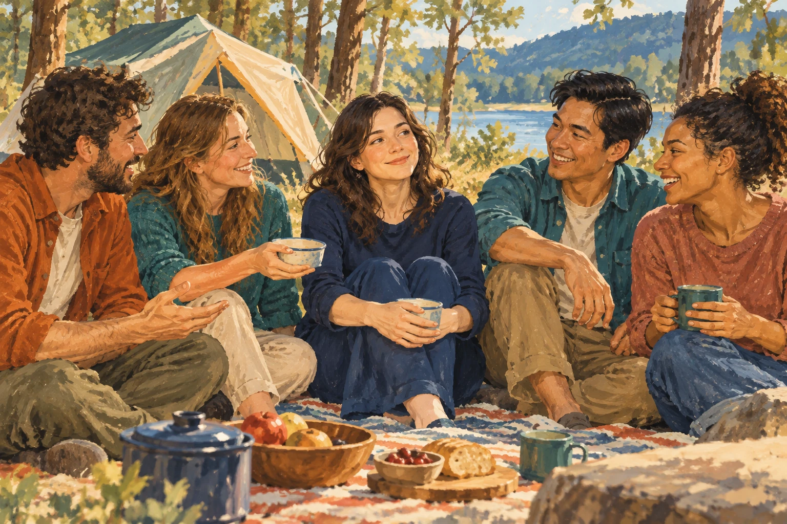
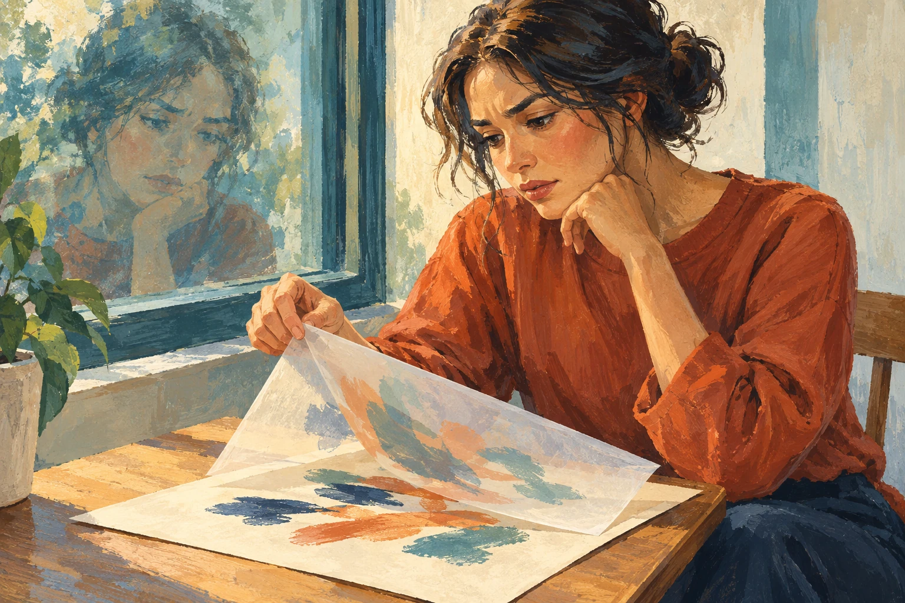

The journey
When Everything Became a Question Mark
The story, in chapters.
I am a student inside these questions, not someone writing from the other side of them.
Chapter One begins with a period when different parts of life seemed to be coming together. New entries will be added here as the journey is actually written.

Chapter One · Entry 01
I Thought I Had Found My Place
For a while, I found myself enrolling in one course after another.
Read Entry 01 →
Chapter One · Entry 02
Getting Closer Changed the View
Working together brought another layer into view: commitments, decisions, responsibility and accountability.
Read Entry 02 →
Chapter One · Entry 03
Then a Psychology Lecture Shook Something Else
A coherent scientific explanation left me afraid that something I believed might not survive what I had learned.
Read Entry 03 →
Chapter One · Entry 04
Where Did the Science End?
I went back over the lecture more slowly and noticed the first small gap in what had felt like one solid conclusion.
Read Entry 04 →
Chapter One · Entry 05
A Whole Day Surrounded by People
The strange thing is, it was actually a good day.
Read Entry 05 →Chapter One · Entry 06
I Thought Philosophy Was Something Philosophers Did
I did not decide to study philosophy.
Read Entry 06 →
Chapter One · Entry 07
What Was in the Source, and What Was I Bringing to It?
Once I started reading philosophy, something slightly annoying happened.
Read Entry 07 →